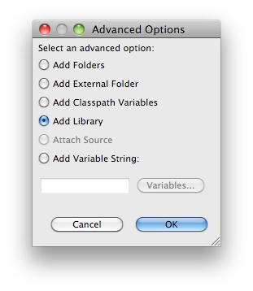
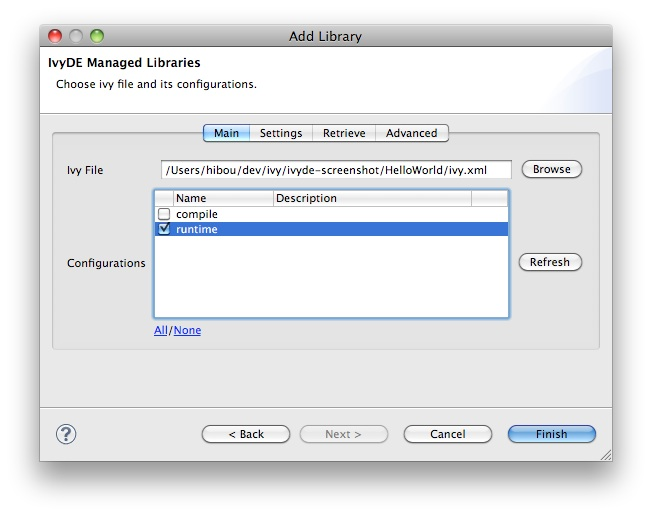
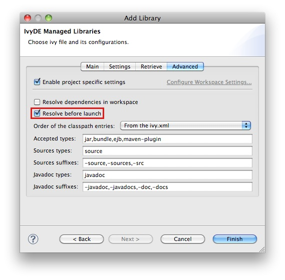

The IvyDE classpath container can also be used in the launch configuration, run or debug. The container will be used because it is included in the default classpath of you project, or by adding it yourself to your launch classpath. <h1>In the project's classpath</h1> It is the simpler configuration, configuration that you implicetely have when you do a "Run As..." on a Java class. The container you see in the launch classpath is actually the one you have in your project in the package explorer. <center><img src="../images/launch_default.jpg"></img></center> It is the same when launching unit tests. Idem for the debug mode. But having the compile classpath might not be appropriate for some launch configuration, so you will have to manage it yourself. <h1>Managing manually</h1> You want to have more control over the classpath of your launch configuration, so you will have to edit it, and manage the IvyDE container in there. Creating a launch configuration, you will get the default classpath as above. So the first step is to remove it. And you probably want to readd your project in the user entries. Then to add an IvyDE container, choose "Advanced": <center><img src="../images/launch_advanced.jpg"></img></center> Choose "Add Library": <center></img></center> Choose "IvyDE Managed dependencies": <center><img src="../images/launch_addivyde.jpg"></img></center> Select the absolute path to your ivy.xml and select the proper configurations: <center></img></center> <b>Note:</b> in the launch configuration it is not possible to edit or launch a resolve manually on the container you are creating. But it is possible to launch a resolve before each launch. It is recommended to do so if the resolve process is not too long. Otherwise you will have to recreate the container each time you change something in the ivy.xml for instance. To enable the resolve before each launch, go into the "Advanced" tab and select "Resolve before launch". <center></img></center> Click "Finish" and see the result: <center><img src="../images/launch_custom.jpg"></img></center>